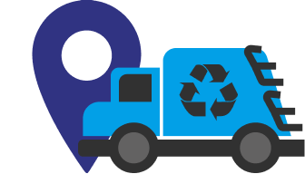

ColetaAssisInformação que ajuda a cidade.
Consulte os dias de coleta do seu bairro
Encontre o cronograma do seu bairro
Escolha um bairro para ver os dias previstos.
A coleta residencial começa às 6h. Deixe o lixo acondicionado antes desse horário, nos dias indicados.